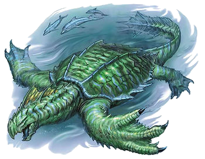

Koblold endevour
The jokes started as soon as characters were made. In kobold endevour you are working together aswell as against each other to steal the most amount of stuff for your dragon king. Your character is proficent in two types of distraction and your character is one of 6 types which determines its breath. We had three green kobolds who could breathe smoke so we all joked about them being heavy vapers, we then had a black kobold who could spit acid we then started a little conversation about him putting people on acid trips, the final kobold was blue which meant he had the power of breathing lightning. We could all use our power once and once only. As the group arrived outside of the rival dragon kings temple or our victim, we instantly plotted how to get rid of his millatrised gluttenous orcs. Our black kobold pointed to a rock calling it a banquet, rolling a 5 plus his proficeny bonus of 2 he succeeded and drew many guards to the rock, the one of the green kobolds using their proficency in music they sang a song about the banquet drawing more guards to the rock. The blue kobold then walked up to the door and used his proficency in explosives blew up the door but knocked himself back and put 4 points in mishap. Mishaps is a counter that when it reaches 10 something happens to make the character to "retire".
As we entered into the temple courtyard we saw 3 rooms and the temple, each room had a sign, toilets, kitchen, tavern. One of the green kobolds kicked down the door to the toilets then entered, in there was two orcs giving eachother backrubs the green kobold rolled a six and the orcs weren't phased by him being there. At the back of the room was some treasure so instinctivly he went to go grab it, rolling high again he got it without an issue. Trobule quickly followed however as 2 of us went into the kitchen, we were greeted by the swedish chef from the muppets, not a kobold verion but the actual swedish chef. In the back of the room was some stuff, not vaulable just plain old stuff, I head over there to pick it up while the blue kobold attempts to befriend the swedish chef. I failed at the attempt to steal it and the blue kobold failed to befirend the swedish chef which lead to him to wave a kife in my face, the blue kobold now had 7 points in mishaps which means it probably wasn't a good idea for him to do this but he did anyway, he goes to pick up the stuff and rolled a 3, failing and putting 10 points in mishaps. At that point the other green kobold decides to walk in with the stuff they stole and saw the swedish chef slam a pot over the head of the blue kobold knocking him unconcious.
At this point my character ran to the tavern but everyone else tried to get the stuff this involved alot of failing and they eventually gave up, the other green kobold used their smoke and the swedish chef kept cooking without caring for the smoke. In the tavern there was a spectacular prize with two drunk orcs infront of it, I was proficent in lieing and apex predators so I used that to my advantage and pointed away yelling elephant and got advantage due to them being drunk. I then grab the spectacular prize and left, we then stood outside of the temple and slowly opened the door. It was a wet area but there was some art and other prizes and sititng ontop of them all was this shell, and out of it came a dragon head. The other green kobold being in proficent in music started to play some music making it get up and dance around and it knocked both him and the blue kobold. That left me and another green kobold who hadn't been active during it, I decided being inspired by the previous green kobolds smoke decided to use it on the dragon king and grabbed what I could, so did the other green kobold. We picked up our unconscious friends and ran back to our kingdom.
Before we presented our stuff to our king the unconscious kobolds woke up and attempted to steal our stuff to present, The blue kobold got half of my things and the black kobold failed at the check to steal from the other green kobold. we then rolled a D6 for each prize we had and took the highest number, the blue kobold and the other green kobold rolled 6 so they then had to pitch their piece to the DM who listened closely and rolled to see who won. the other green kobold was able to convince the dragon king with the milkshake holder. The dragon king didn't like picasso so I didn't get to the final stage. Both the blue and the black kobold attempted to kill the other green kobold and ended up killing themselves. We end on a scene of my character and the first green kobold sitting watching the news of the dragon kings right hand man who was the other green kobold. next to my seat was the two corpses of our friends occasionally i play the drums on their skulls. This has been Kobold Endeavour by grant howitt You can find the game here
